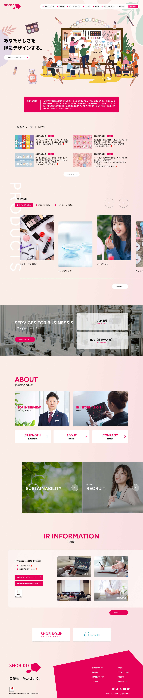
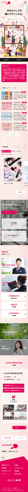
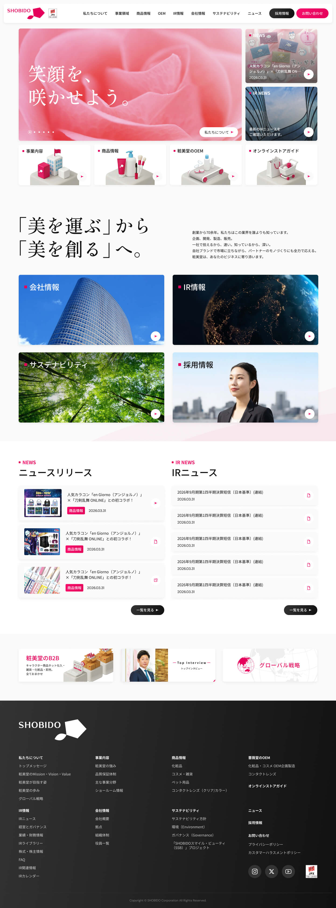
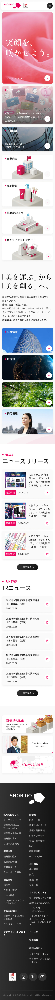

「あなたらしさを、瞳にデザインする。」という想いを、色とイラストの動きで伝えるトップページのご提案です。A案・B案の2案をご用意しました。タブで切り替えてご覧ください。
ブランドカラーのピンクを軸に、親しみやすさと企業としての信頼感を両立します。
メインビジュアルに、人々が一枚の絵をつくり上げるイラストを採用。化粧品・コンタクトレンズ・キッズコスメを扱う粧美堂の世界観を、ひと目で伝えます。
淡いピンクの背景にブランドカラーを効かせ、華やかさと読みやすさを両立。区切りの色面で、ページのリズムをつくります。
ニュース、商品、法人向けサービス、会社情報、IR、採用を、それぞれ探しやすいブロックに整理しました。
画面内をスクロールして、ページ全体をご確認いただけます。

スマートフォンでも、PCと同じ世界観と情報の順番で読める構成です。

イラストが少しずつ動き、来訪者を迎えるトップならではの演出イメージです。
B案は、大手企業ならではの格と、見渡しやすい構成を軸にしたご提案です。
粧美堂の今を、正しく・強く・美しく証明する
大手ならではの「格」と「余裕」を持ったビジュアル設計にします。
Bento UIで、ひと目で「見渡せる」回遊設計へ変えます。
企業の「現在地」と「戦略」を、見た目で翻訳します。
PCとSPのトップページ全体です。画面内をスクロールしてご確認ください。


PCと同じ世界観のまま、縦スクロールで情報が順に展開される構成です。
ファーストビューから、フッターまでの設計意図です。
バラの花びらのクローズアップをフルブリードで配置し、「笑顔を、咲かせよう。」というコピーを大きく重ねています。
ファーストビューの役割は、ブランドの“格”を一瞬で伝えることです。情報より先に「この会社はただ者ではない」という印象を与える設計です。
右カラムのニュースエリアとの2カラム構成で、KVの存在感を保ちつつ情報密度を担保しています。下方には、商品・事業に関連する動線を親しみやすい3Dイラストで配置し、各コンテンツへの入口としても機能させています。
「美を運ぶ」から「美を創る」へというブランドステートメントをページ中段に配置。スクロールの流れの中で、自然にブランドの文脈が伝わります。
投資家・取引先・求職者など、目的の異なるステークホルダーが迷わずゴールへたどり着けるよう、4つの主要コンテンツをグリッドで並列配置しました。スクロール不要で全体を俯瞰でき、「自分に関係のある情報がどこにあるか」が瞬時に判断できます。
企業の姿勢や事業を一通り伝えた流れの中に、ニュースリリースとIR情報を2カラムで並列配置しています。最新情報をコンテンツとして設けることで、「常に前進している企業」であることを伝えます。
IRは企業の信頼性・透明性・成長性を示す重要な情報です。ニュースと同じ視線の高さに並べ、その価値にふさわしい存在感を与えています。
フッター直上のバナーエリアでは、B2B展開・トップインタビュー・グローバル戦略の3コンテンツを横並びで配置し、ユーザーが「次に見るべきもの」へ自然に進めるようにしています。
フッターは全コンテンツを整然と一覧できる構成にし、どのページからでも見たい情報へ迷わずたどり着けます。離脱ではなく、回遊につなげます。
スマートフォンで、粧美堂をフルに体験する設計です。
スマートフォンからのアクセスが過半数を占める今、SPの体験がブランド体験の質を左右します。縦スクロールの流れに沿って情報が自然に展開されるコンテンツ配置、指で迷わず操作できるボタンサイズと余白、ハンバーガーメニューに整理されたナビゲーションなど、「スマホで粧美堂を知ろうとする人」を起点に設計しています。
ファーストビューのキャッチコピーは、画面いっぱいに広がる大胆な文字組で、小さな画面でもブランドの存在感を損なわず届けます。
コンテンツの役割に応じて、ビジュアルの言語を変えます。
メインビジュアル、会社情報、IR、サステナビリティ、採用などには実写の写真を配置します。企業の実体を判断しようとするステークホルダーに、リアリティと重厚感で信頼感と風格を伝えます。
事業内容、商品情報、OEMなどのカテゴリには、オリジナル3Dイラストを作成します。親しみやすさと遊び心を持ちながら、どのページでも「粧美堂らしさ」を感じられるようにします。
写真で「信頼してもらう」。イラストで「好きになってもらう」。この使い分けが、粧美堂の多面的な強みをひとつのサイトで体現する鍵です。